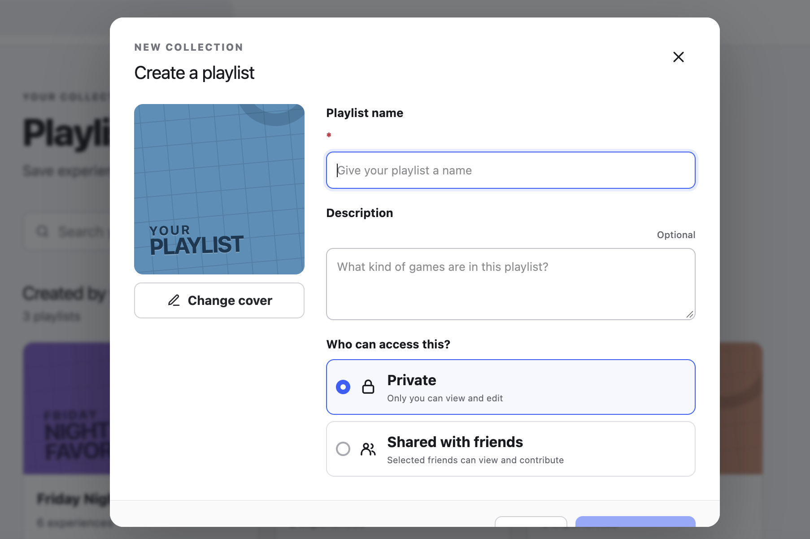
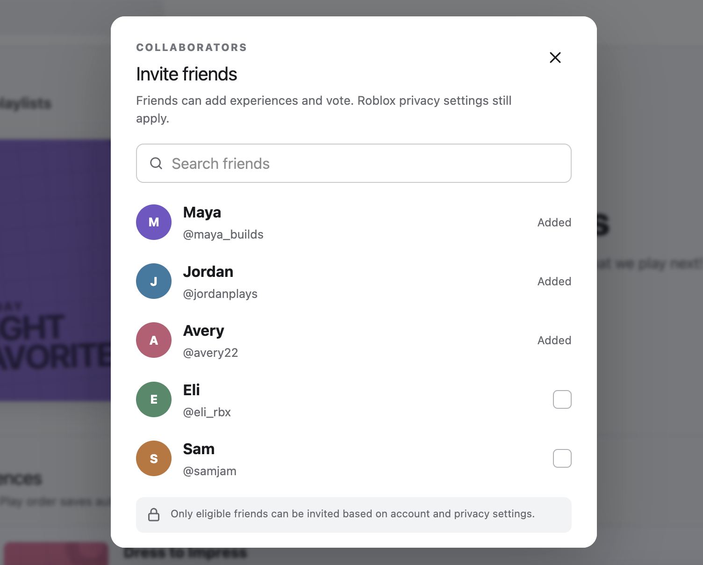

03 · Product Concept
Roblox —
Playlists
A collaborative way for friends to collect experiences, vote on what to play next, and move from deciding into an existing Party.
Independent concept project. Not affiliated with Roblox.
- ROLE
- Product Designer
- FORMAT
- Independent concept
- FOCUS
- Collaboration + group decision-making
- PROTOTYPE
- Figma Make
More deciding together.


Choosing a game is part of playing together.
When a group wants to play Roblox together, the decision can happen before anyone launches an experience: people suggest games, search separately, send names back and forth, and try to agree on what sounds fun.
I framed Roblox Playlists as a lightweight coordination layer for that moment. Instead of redesigning the entire social system, the concept extends familiar collection behavior and connects it to Roblox's existing Party experience.
HOW MIGHT WE Help friends collect game ideas, make a group decision, and move into play without turning the process into more work?
A playlist is more useful when it can change with the group.
The concept treats a playlist as both a personal collection and a collaborative planning object. A playlist can begin privately, then become shared when the owner invites eligible friends.
Once shared, collaborators can add experiences, see who contributed each suggestion, vote on what should come next, and keep an ordered queue. Ownership and privacy remain explicit rather than assuming every saved list should be social.
From saved ideas to the next game.
The prototype follows one connected loop: find the group's playlists, open a shared collection, manage who can contribute, and launch the experience the group chooses.
Saved playlists sit alongside a visible Party state, so choosing a game feels connected to the reason the user is already there: friends are online and ready to play.

Collaborators can see the queue, who added each experience, vote counts, the next-up state, and direct play actions without leaving the collection.

Access is a deliberate choice during creation, while a personal collection can still become shared later.

The concept keeps Roblox privacy restrictions visible instead of creating an unrestricted social layer.
A lightweight confirmation closes the planning loop and simulates launching the selected experience for the existing group.
Built as a system of interactions, not just screens.
I used Figma Make to prototype the feature as a connected product flow with realistic mock data and simulated local state. The design brief intentionally included creation, searching, adding and removing experiences, collaboration, voting, reordering, and a Party launch handoff.
The AI-assisted workflow let me move quickly into edge states and interactions while keeping the product decisions explicit: which actions belong to the playlist owner, what collaborators can change, where privacy guidance appears, and which parts should remain owned by existing Roblox systems.
COLLECT → VOTE → PLAY TOGETHER
Built in Figma Make as a functional concept focused on group selection, collaborative ownership, and a realistic handoff into Party.
What I would validate next
The core question is not whether people can save games. It is whether a shared collection actually makes choosing together easier.
If I continued the project, I would test how groups naturally suggest games today, whether voting feels helpful or overly formal, how ties should be resolved, and when users expect a playlist to behave differently from favorites or recently played experiences.
I would also validate collaboration permissions across different account settings and ages, then refine the responsive version around the actions that matter most when friends are already in a Party and trying to start quickly.